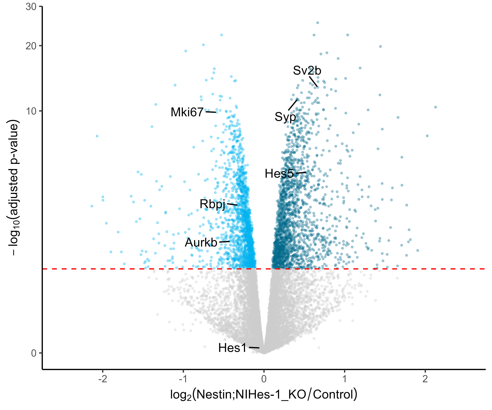
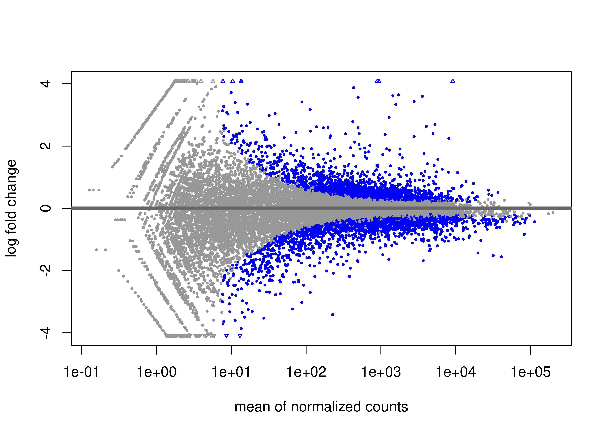
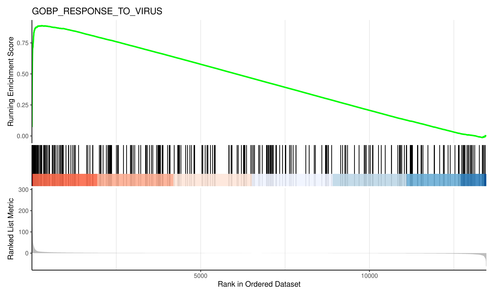
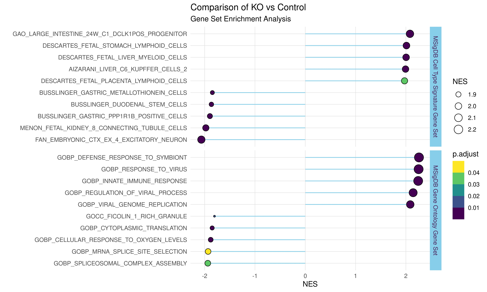

6 Differential gene expression analysis
6.1 Analysis using DESeq2
Here, we are going to perform differential gene expression analysis using DESeq2.
Before this exercise, you are recommended to have basic R programming knowledge and data visualization skill. For that you can refer to my workshop material.
#===============================================================
# Install packages
#===============================================================
# Install bioconductor packages.
bioconductor_packages <- c(
'DESeq2', 'clusterProfiler',
'biomaRt', 'org.Hs.eg.db',
'org.Mm.eg.db', 'enrichplot'
)
if (!requireNamespace("BiocManager", quietly = TRUE))
install.packages("BiocManager")
BiocManager::install(bioconductor_packages)
# Install CRAN packages.
cran_packages <- c(
'tidyverse', 'pheatmap',
'msigdbr', 'RColorBrewer',
'ggrepel'
)
install.packages(cran_packages)
#===============================================================
# Load the packages
#===============================================================
library(DESeq2)
library(ggplot2)
library(pheatmap)
library(RColorBrewer)
#===============================================================
# Import data
#===============================================================
# Import gene counts table generated from featureCounts
# - skip first row (general command info)
# - make row names the gene identifiers
countdata <- read.table("final_counts_all.txt",
header = TRUE, skip = 1,
row.names = 1)
head(countdata)
# Remove .bam from column identifiers
colnames(countdata) <- gsub("Aligned.sortedByCoord.out.bam",
"",
colnames(countdata),
fixed = T)
ncol(countdata)
#Take only expression values
countdata <- countdata[ ,c(6:11)]
head(countdata)
#===============================================================
# Convert to matrix
#===============================================================
countdata <- as.matrix(countdata)
head(countdata)
# Assign condition (first three are control,
# second three contain the Knock-Out)
condition <- factor(c(rep("Control", 3),
rep("Knock-Out", 3)))
head(countdata)
#===============================================================
# Prepare DESeqDataSet
#===============================================================
# Create a coldata frame and instantiate the DESeqDataSet.
#See ?DESeqDataSetFromMatrix
(coldata <- data.frame(row.names=colnames(countdata),
condition))
head(coldata)
dds <- DESeqDataSetFromMatrix(countData=countdata,
colData=coldata,
design=~condition)
dds$condition
# Determining the directionality of comparison.
dds$condition <- relevel(dds$condition, ref = "Control")
#===============================================================
# Run the DESeq2 pipeline
#===============================================================
dds <- DESeq(dds)
dds
# Sample level QC by PCA and hierarchical clustering methods
# Transform normalized counts using the rlog transformation
# Transform counts for data visualization
rld <- rlog(dds, blind=TRUE)
#===============================================================
# Principal components analysis (PCA)
#===============================================================
# Plot PCA
# Save the correlation plot
jpeg(filename = "PCA_plot.jpg",
height = 4,width = 6,units = "in",res = 600)
plotPCA(rld, intgroup="condition")+ theme_light()
dev.off()
#===============================================================
#Hierarchical Clustering
#===============================================================
rld_mat <- assay(rld)
# Extract the rlog matrix from the object
rld_mat <- assay(rld)
# Compute pairwise correlation values
rld_cor <- cor(rld_mat)
# Plot heatmap
pheatmap(rld_cor)
heat.colors <- brewer.pal(6, "Greens")
# Save the correlation plot
jpeg(filename = "Correlation_plot.jpg",
height = 4,width = 6,units = "in",res = 600)
pheatmap(rld_cor, color = heat.colors,fontsize = 10,
fontsize_row = 10, height=20)
dev.off()
#===============================================================
# Get differential expression results
#===============================================================
results <- results(dds, pAdjustMethod = "fdr", alpha = 0.05)
head(results)
summary(results)
# Generate MA plot
jpeg("MA_plot.jpg", units="in",
width=7, height=5, res = 600)
plotMA(results)
dev.off()
#===============================================================
# Convert Gene Symbol to multiple IDs
#===============================================================
# Human genome database (Select the correct one)
library(org.Hs.eg.db)
# Add gene full name
results$description <- mapIds(x = org.Hs.eg.db,
keys = row.names(results),
column = "GENENAME",
keytype = "SYMBOL",
multiVals = "first")
# Add ENTREZ ID
results$entrez <- mapIds(x = org.Hs.eg.db,
keys = row.names(results),
column = "ENTREZID",
keytype = "SYMBOL",
multiVals = "first")
# Add ENSEMBL
results$ensembl <- mapIds(x = org.Hs.eg.db,
keys = row.names(results),
column = "ENSEMBL",
keytype = "SYMBOL",
multiVals = "first")
head(results)
# Order by adjusted p-value
res <- results[order(results$padj), ]
# Merge with normalized count data
resdata <- merge(as.data.frame(counts(dds, normalized=TRUE)),
as.data.frame(res),
by="row.names", sort=FALSE)
head(resdata)
names(resdata)[1] <- "Gene"
head(resdata)
#To remove rows containing NA and write as csv file
library(tidyverse)
resdata1 <- resdata %>% drop_na()
write.csv(resdata1, file="diff_KO_vs_Control.csv",
row.names = F)
# Subset Upregulated and Downregulated genes
upreg <- resdata1 %>%
dplyr::filter(log2FoldChange > 0 & padj < 0.05)
downreg <- resdata1 %>%
dplyr::filter(log2FoldChange < 0 & padj < 0.05)
write.csv(upreg, file = "KO_upregulated_genes.csv",
row.names = F)
write.csv(downreg, file = "KO_downregulated_genes.csv",
row.names = F)
# Gather Log-fold change and FDR-corrected pvalues from DESeq2 results
# - Change pvalues to -log10 (1.3 = 0.05)
data <- data.frame(gene = row.names(res),
pval = -log10(res$padj),
lfc = res$log2FoldChange)
# Remove any rows that have NA as an entry
data <- na.omit(data)
# Color the points which are up or down log2(FC=1.5)= 0.58,
# -log10(P-adj=0.05)=1.3
## If fold-change > 0.58 and pvalue > 1.3 (Increased significant)
## If fold-change < 0.58 and pvalue > 1.3 (Decreased significant)
data <- mutate(data,
color = case_when(data$lfc > 0 & data$pval > 1.3 ~ "Increased",
data$lfc < 0 & data$pval > 1.3 ~ "Decreased",
data$pval < 1.3 ~ "nonsignificant"))
summary(data)
head(data)
# Make a basic ggplot2 object with x-y values
vol <- ggplot(data, aes(x = lfc, y = pval, color = color))
# Add ggplot2 layers
p <- vol+
geom_point(size = 0.5, alpha = 0.4, na.rm = T) +
scale_color_manual(name = "Directionality",
values = c(Increased = "deepskyblue4",
Decreased = "deepskyblue2",
nonsignificant = "gray80")) +
theme_classic() + # change overall theme
theme(legend.position = "none") + # change the legend
xlab(expression(log[2]("KO" / "Control"))) +
# Change X-Axis label
ylab(expression(-log[10]("adjusted p-value"))) +
# Change Y-Axis label
scale_y_continuous(trans = "log1p")+
# Scale yaxis due to large p-values
geom_hline(yintercept = 1.3,
colour = "red",
linetype="dashed")
# Add p-adj value cutoff horizontal line
#geom_vline(aes(xintercept=0.58),
colour="gray60",
linetype="dashed")+
#geom_vline(aes(xintercept=-0.58),
colour="gray60",
linetype="dashed")+
#xlim(-2.5, 2.5)
#Base vocano plot
p
library(ggrepel)
#If few selected genes need to be annotated in the volcano plot
p1 <- p+ geom_text_repel(data = data %>%
filter(gene %in% c("HES5", "RBPJ",
"MKI67", "AURKB")),
aes(label = gene, x = lfc, y = pval),
box.padding = unit(.7, "lines"),
hjust= 0.30,
segment.color = 'black',
colour = 'black')
#View the volcano plot
p1
#If want to plot top 10 differentially expressed genes
p2 <- p+ geom_text_repel(data=head(data, 10), aes(label=gene),
box.padding = unit(.5, "lines"),
hjust= 0.30,
segment.color = 'black',
max.overlaps = Inf,
colour = 'black')
p2
# Save the volcano plot
ggsave(
"volcano_diff_KO_vs_Control.jpg",
p1,
width = 6.00,
height = 5.00,
dpi = 600
)6.2 Pathway Enrichment Analysis
Pathway enrichment analysis is a statistical method by which we can predict what biological pathways are enriched in a given gene list.
There are two statistical test that can be performed.
- Statistical over-representation test
- Statistical enrichment test
- To know more about these tests you may refer to Nature Protocol
6.2.1 Statistical Over-representation Analysis
library(clusterProfiler)
library(org.Hs.eg.db)
library(enrichplot)
library(tidyverse)
library(msigdbr)
# Import the data
res <- read.csv(file = "diff_KO_vs_Control.csv",
header = T, row.names = 1)
data <- data.frame(gene = row.names(res),
pval = -log10(res$padj),
lfc = res$log2FoldChange)
#===============================================================
# GO over-representation analysis (ORA) using enrichGO
#===============================================================
#Filter the genes which are upregulated in KO
geneList <- data %>% dplyr::filter(lfc >0 & pval > 1.3)
ego <- enrichGO(gene = geneList$gene,
OrgDb = org.Hs.eg.db, # or Org.Hs.eg.db
ont = "ALL",
#one of “BP”, “MF”, “CC” or “ALL”
pAdjustMethod = "fdr",
#one of “bonferroni”, “BH”, “BY”, “fdr”, “none”
pvalueCutoff = 0.01,
qvalueCutoff = 0.05,
keyType = "SYMBOL",
#“ENSEMBL”, “ENTREZID”, “SYMBOL”
readable = TRUE)
write.csv(ego@result,
file = "GO_upregulated_clusterprofiler.csv",
row.names = F)
# Plot
jpeg(filename = "Upreg_enrichment.jpg",
width = 8, height = 6, units = "in",
res = 600)
dotplot(ego)+
labs(title = "Functional enrichment of upregulated genes")
dev.off()
# Few other plots
barplot(ego)
upsetplot(ego)
#Filter the genes which are downregulated in KO
geneList_down <- data %>% dplyr::filter(lfc <0 & pval > 1.3)
ego_down <- enrichGO(gene = geneList_down$gene,
OrgDb = org.Hs.eg.db,
# or Org.Mm.eg.db
ont = "ALL",
#one of “BP”, “MF”, “CC” or “ALL”
pAdjustMethod = "fdr",
#“bonferroni”, “BH”, “BY”, “fdr”, “none”
pvalueCutoff = 0.01,
qvalueCutoff = 0.05,
keyType = "SYMBOL",
#“ENSEMBL”, “ENTREZID”, “SYMBOL”
readable = TRUE)
head(ego_down@result)
write.csv(ego_down@result,
file = "GO_downregulated_clusterprofiler.csv",
row.names = F)
##Plot
jpeg(filename = "Downreg_enrichment.jpg",
width = 8, height = 6, units = "in",
res = 600)
dotplot(ego_down)+
labs(title = "Functional enrichment of downregulated genes")
dev.off()
barplot(ego_down)
upsetplot(ego_down)
#===============================================================
# over-representation analysis (ORA) using MSigDb gene sets
#===============================================================
m_ont <- msigdbr(species = "Homo sapiens", category = "C5") %>%
select(gs_name, gene_symbol)
head(m_ont)
# Upregulated genes functional enrichment analysis
em <- enricher(geneList$gene, TERM2GENE=m_ont)
head(em)
barplot(em)
dotplot(em)
upsetplot(em)
# Downregulated genes functional enrichment analysis
ed <- enricher(geneList_down$gene, TERM2GENE=m_ont)
barplot(ed)
dotplot(ed)
upsetplot(ed)6.2.2 Statistical Enrichment Analysis
The most used tool for statistical enrichment test is GSEA.
To know more about GSEA you may refer to Nature Protocol
However, here we shall perform GSEA in R which is very easy and fast.
library(clusterProfiler)
library(enrichplot)
library(tidyverse)
library(msigdbr)
gene.list <- resdata1 %>%
dplyr::mutate(Score = -log10(padj)* sign(log2FoldChange))%>%
dplyr::select(symbol, Score)
# Make the rank file
ranks <- deframe(gene.list)
head(ranks)
# Set decreasing order
geneList = sort(ranks, decreasing = TRUE)
#===============================================================
# Perform GSEA
#===============================================================
em2 <- GSEA(geneList, TERM2GENE = m_ont)
head(em2)
gsea_result <- em2@result
# Save the GSEA result
write.csv(gsea_result,
file = "GSEA_Ontology.csv",
row.names = F)
# Save the GSEA Plot
jpeg(filename = "GSEA_plot.jpg",
width = 10, height = 6, units = "in",
res = 600)
gseaplot2(em2, geneSetID = 2, title = em2$Description[2])
dev.off() 
 
6.2.3 Divergent Lollipop Chart
library(tidyverse)
library(msigdbr)
library(clusterProfiler)
library(enrichplot)
#===============================================================
#Import the data
#===============================================================
res <- read.csv(file = "diff_KO_vs_Control.csv",
header = T)
head(res)
gene.list <- res %>%
dplyr::mutate(Score = -log10(padj)* sign(log2FoldChange))%>%
dplyr::select(symbol, Score)
#Make the rank file
ranks <- deframe(gene.list)
head(ranks)
#Download MSigDb ontology gene sets
#===============================================================
m_ont <- msigdbr(species = "Homo sapiens",
category = "C5") %>%
select(gs_name, gene_symbol)
head(m_ont)
#Download MSigDb Cell Type Signature gene sets
#===============================================================
m_cell <- msigdbr(species = "Homo sapiens",
category = "C8") %>%
select(gs_name, gene_symbol)
head(m_cell)
#decreasing order
geneList = sort(ranks, decreasing = TRUE)
#Perform GSEA using ONTOLOGY gene sets
#===============================================================
em2 <- GSEA(geneList, TERM2GENE = m_ont)
head(em2@result)
#Perform GSEA using CELL TYPE gene sets
#===============================================================
em3 <- GSEA(geneList, TERM2GENE = m_cell)
head(em3@result)
# Data wrangling
#===============================================================
celltype_pos <- em3@result %>%
mutate(gene_set = "MSigDB Cell Type Signature Gene Set")%>%
top_n(n = 5, wt = NES)
celltype_neg <- em3@result %>%
mutate(gene_set = "MSigDB Cell Type Signature Gene Set")%>%
top_n(n = 5, wt = -NES)
ont_pos <- em2@result %>%
mutate(gene_set = "MSigDB Gene Ontology Gene Set")%>%
top_n(n = 5, wt = NES)
ont_neg <- em2@result %>%
mutate(gene_set = "MSigDB Gene Ontology Gene Set")%>%
top_n(n = 5, wt = -NES)
celltype_merge <- rbind(celltype_pos, celltype_neg)
GO_merge <- rbind(ont_pos, ont_neg)
my_data <- rbind(celltype_merge, GO_merge) |>
mutate(ID = fct_reorder(ID, NES))
# Round up NES values upto 3 digits
my_data$NES <- round(my_data$NES, 3)
head(my_data)
#Divergent lollipop chart
#===============================================================
p <- ggplot(my_data,
aes(x = ID,
y = NES))+
geom_segment(aes(y = 0,
x = ID,
xend = ID,
yend = NES),
color = "skyblue")+
geom_point(stat = "identity",
aes(size = abs(NES),
fill = p.adjust),
shape = 21)+
coord_flip()+
scale_fill_viridis_b()+
theme_light()+
theme(panel.border = element_blank(),
panel.grid.minor.x = element_blank(),
axis.ticks = element_blank(),
strip.background = element_rect(fill = "skyblue"),
strip.text = element_text(color = "#4a235a"))+
labs(title = "Comparison of KO vs Control",
subtitle = "Gene Set Enrichment Analysis",
size = "NES",
x = "")+
facet_grid(gene_set ~.,space="free", scales="free")
p
#Save the file
#===============================================================
jpeg(filename = "KO_GSEA_chart.jpg",
height = 8, width = 14,
units = "in", res = 600)
p
dev.off()